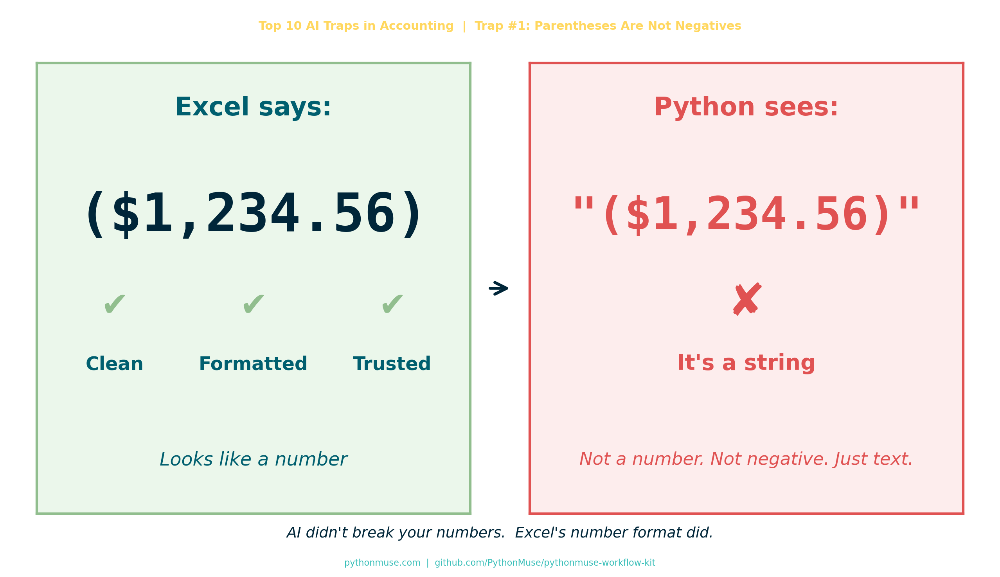

AI Didn't Break Your Numbers. Excel Did.
~6 min read
By Svetlana Toohey Published May 2026

Series: Top 10 AI Traps in Accounting — Trap #1
I Got Into Trouble Today
Not the dramatic kind.
No one called. No fire drill. No audit panic.
Just… numbers not tying.
You know — the quiet kind of wrong.
The Setup
Everything looked fine in Excel.
Clean. Professional. Very accounting.
I ran it through Python.
And suddenly…
- totals off
- variance weird
- logic breaking
Naturally, the first thought:
"AI messed this up."
The Reality Check
Here's what Python actually saw:
Not a number.
A string.
A very confident-looking string.
Excel vs Reality
Excel showed me this:
| What I Saw | What It Meant |
|---|---|
($1,234.56) |
Negative number ✔ |
| Formatted beautifully | Easy to trust ✔ |
But under the hood?
$→ text,→ text( )→ just parentheses
There was no negative number. Just vibes.
And AI?
AI did exactly what it was supposed to do.
It assumed: "If you gave me a column of numbers, they are probably numbers."
Reasonable. Incorrect. Very Excel of me.
The Moment It Clicked
This isn't an AI problem.
This is an accounting habit problem.
We've been trained for years to trust what we see:
- parentheses = negative
- formatting = meaning
- Excel = truth
But in Python?
If it's not explicitly a number, it's not a number.
No interpretation. No assumptions. No "I know what you meant."
The Fix
def clean_accounting_number(series):
return (
series.astype(str)
.replace(r'[\$,]', '', regex=True) # Remove $ and commas
.replace(r'\((.*?)\)', r'-\1', regex=True) # (123) → -123
.astype(float)
)
Translation:
- Remove the drama (
$,,) - Translate accounting language:
(123)→-123 - Finally — treat it like a number
This logic is packaged as a reusable PythonMuse Skill:
skill-accounting-number-normalization
You can also find it in the PythonMuse Workflow Kit.
The Rule of Thumb (This Will Save You Time)
If your data comes from Excel:
Export to CSV or re-save as CSV before using it in Python.
Why? Because CSV strips out a lot of Excel's "presentation magic."
It won't fix everything — you'll still need to clean data — but:
- fewer hidden surprises
- more consistent structure
- easier to debug
- easier for AI to work with
The Bigger Lesson
We keep saying: "AI isn't reliable yet."
But sometimes:
- AI is fine
- Python is fine
- The logic is fine
And the issue is: we handed them Excel's presentation layer and called it data.
The Truth About Excel
Excel is amazing.
But Excel is also:
- a storyteller
- a formatter
- a very convincing illusionist
It makes data look clean… even when it's not.
If you've read "AI Can't Work With Our Excel Files"... or Can It?, you already know the instruction layer matters. This is the data discipline side of the same problem.
And if you're building an audit-ready workflow, the raw-layer principle from The Workings Layer Method applies here too: always preserve the original. Never overwrite source data. Transform in a separate step.
The Shift We Need to Make
If you're moving into Python + AI workflows:
Stop asking:
"Why did AI get it wrong?"
Start asking:
"What assumptions did Excel teach me that aren't real?"
My Favorite Line From Today
AI didn't fail. It just didn't know you were speaking accounting.
Final Thought
We don't have an AI problem.
We have a data discipline gap.
And honestly? That's good news.
Because that's something we can fix.
PythonMuse Skill
This article has a companion Skill you can drop into any project:
Accounting Number Normalization →
Also available in the PythonMuse Workflow Kit on GitHub.
Series: Top 10 AI Traps in Accounting — Trap #1: Parentheses Are Not Negatives
A note on how this article was made. This article started with me. The experience, the problem, and the fix are mine — I shared what actually happened and how I solved it. ChatGPT helped me shape that into a structured draft. GitHub Copilot (Claude Sonnet 4.6) then built the final article, the companion Skill, and all visual assets — working from my direction and feedback at each step. I reviewed every output, pushed back on things I didn't like (the title, font sizes, branding), and made all final content decisions. That process — bringing your own experience, using AI to build and iterate, and staying in the editorial seat throughout — is exactly what this series is about.
By Svetlana Toohey | PythonMuse | GitHub